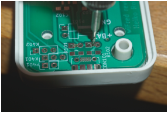
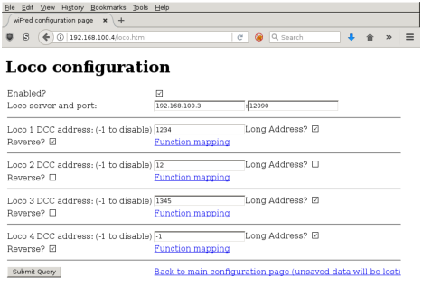
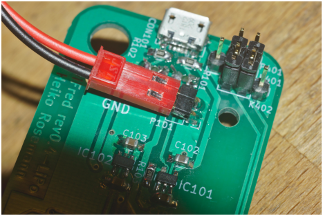

wiFred documentation – Documentation for WiFi throttle with withrottle interface and wireless clock driver |
Abstract:This document describes the usage and configuration of the wiFred – a very simple wireless throttle to connect to withrottle servers like JMRI. It also contains schematics and BOMs for the device – both the LiPo battery version in active development and the first prototype with 2xAA cells – as well as programming instructions and assembly tips, and also an overview of options for the server side of things.
The most recent version of this document can be found at:
https://newheiko.github.io/wiFred,
https://github.com/newHeiko/wiFred/raw/master/documentation/docu.pdf and
https://github.com/newHeiko/wiFred/blob/master/documentation/docu.tex.
If you want to know more about the development history of the wiFred, skip ahead to section 5 – otherwise read on with section 1 if you have a wiFred powered by an internal lithium battery or with section 4 if you have one of the few prototypes powered by AA cells.
Table 1: LED patterns and their meaning on the wiFred throttle
Red LED Green LED (Left) Green LED (Right) Status Slow Blinking (0.5 Hz) Off Off Trying to connect to WiFi network Fast Blinking (2 Hz) Off Off Successful WiFi connection, trying to connect to wiThrottle server and acquire locos Off Off On Regular operation, forward direction Off On Off Regular operation, reverse direction Off Flashing On Emergency stop, forward direction. Also happens when switching direction with speed potentiometer not at zero Off On Flashing Emergency stop, reverse direction. Also happens when switching direction with speed potentiometer not at zero Off Off Blinking Battery low, regular operation, forward direction Off Blinking Off Battery low, regular operation, reverse direction Off Flashing Blinking Battery low, Emergency stop, forward direction Off Blinking Flashing Battery low, Emergency stop, reverse direction Short flashes Off Off Throttle in low-power mode Off Off Off Battery empty or no battery inserted On Off Off No connection to existing WiFi network. Created internal configuration WiFi network On On On Configuration mode enabled while connected to existing WiFi network. All locos emergency stop to avoid runaways. Push SHIFT + ESTOP again to exit configuration mode
To recover from an emergency stop, turn speed potentiometer to zero to re-gain control.
Follow these steps for a new throttle (see later chapters for more explanation or if you run into trouble)
Your throttle should now be ready to use and connect to your wiThrottle server on startup. Refer to the chapters below if it does not or contact the author of this document.
Before operating the throttle, fully charge the battery which will also calibrate the internal battery voltage measurements. Before the first full charge, the throttle may not shut down when the battery is empty which can lead to damage to the battery. This can be checked by comparing the device’s battery voltage measurement on the status subpage of the configuration website to voltage readings from a multimeter on the battery terminals – an accuracy of 50 mV to 100 mV is OK.
Before using the device, it must be configured. At the very least, the General Configuration 2.2 and Loco Configuration 2.3 pages have to be submitted once to be saved to non-volatile memory. If no valid configuration is detected at startup, the device will start with a default configuration with no locos enabled and trying to connect to a network named “undef” with a key named “undef”, which will probably fail.
There are two ways to enter configuration mode:
In the first case, the throttle will create a wireless network named wiFred-config plus four hex digits taken from the MAC address of the throttle WiFi interface, for example wiFred-config0CAC. Any WiFi device with a web browser can connect to that network and open a web browser to point to http://192.168.4.1.
In the second case, the throttle will change the last tuple of it’s IP address to .253 – so if the wireless network is configured with IP addresses in the 192.168.100.x-range as highlighted in figure 1, any web browser can access the configuration at http://192.168.100.253.
If the IP address of the throttle during normal operation is known, the configuration page can also be accessed by pointing a web browser to it at any time while it is connected. Note that this is untested and therefore not recommended while the throttle is running locos.
Figure 2 shows the first page you will see when you point a web browser at your wiFred throttle. It has some general configuration settings for the following items:
Reminder: Changes are saved using the “Submit Query” button which may look different in different web browsers (firefox shown).
A new device will not read a saved configuration at startup unless both the main page and the loco configuration subpage have been saved at least once.
This page also includes links to the configuration sub page for locos as well as a link to the status page shown in figure 3 which gives information about the current battery voltage and may be enhanced in the future.
On this page, shown in figure 4, the (up to four) locomotives to be controlled with this throttle and some settings for all locomotives are available.
Right on top, the server settings can be found. The correct settings can be read from the JMRI withrottle server screen, as highlighted in figure 1. Normally the port does not need to be changed, as 12090 is the default setting.
Following the server configuration, there are four identical sections assigned to the four different locomotives which can be controlled with this throttle. Each section consists of the following settings:
Reminder: Changes are saved using the “Submit Query” button which may look different in different web browsers (firefox shown).
By default, if a function key is pressed, the throttle will send the appropriate commands to every loco under control. Under certain circumstances, this may not be desired – the obvious example being a loco in the middle of a multi-unit consist, which should not have lights or ditchlights. So this page – shown in figure 5 – offers the option to chose between three different settings for every function on each of the four locomotives (one page per locomotive):
Reminder: Changes are saved using the “Submit Query” button which may look different in different web browsers (firefox shown).
Follow these steps for a new throttle (see later chapters for more explanation or if you run into trouble)
Your throttle should now be ready to use and connect to your wiThrottle server on startup. Refer to the chapters below if it does not or contact the author of this document.
  
Figure 6: Controls and features of the wiFred-throttle – prototype version
Figure 6 shows the controls of the wireless throttle. They consist of the following:
As soon as a pair of batteries is inserted into the battery compartment as the symbols inside the battery compartment show, the throttle will boot up and try to connect to a wireless network. The throttle will not be damaged if batteries are inserted wrongly, but it will not work either. Use NiMH- or primary AA cells with 1.2 V to 1.5 V nominal voltage, low self discharge NiMH cells like Eneloop® or similar are recommended. Do not insert 3 V or 3.6 V AA size lithium batteries as this may damage the throttle.
If no connection to the network configured into the device can be established within 60 seconds, the throttle will create it’s own wireless network named wiFred-config plus four hex digits taken from the MAC address of the throttle WiFi interface, for example wiFred-config0CAC, to enable configuration as described in section 2.
Four different locos with long DCC addresses can be assigned to the four loco selection switches. Commands derived from the speed potentiometer, the direction switch and the function keys will be transmitted to all selected locos (near) simultaneously, with a certain translation table enabling some locos to go backwards when others go forwards and also limiting function keys to some of the four locos only – this is described in more detail in sections 2.3 and 2.4.
Pushing the red emergency stop key will cause the throttle to send an emergency stop signal to all four locos attached. After an emergency stop, turn the speed potentiometer to zero to re-enable control of the locos.
Pushing the red emergency stop key while holding down either of the shift keys will place the device into configuration mode (as well as issueing an emergency stop to all attached locos). See section 2 for more details on how to access the throttle to do the configuration.
Any change in the loco selection switches will cause the throttle to send a stop (zero speed) command to all attached locos. This makes sure that any loco that is deselected will stop on the layout and avoids newly selected locos suddenly taking off at speed. The same is true for a change in the direction switch, to avoid high-speed reverse maneuvers. Turn the speed potentiometer to zero to re-enable control of the locos.
When all four loco selection switches are set to the disabled state, the throttle will send a stop (zero speed) command to all four locos attached and – after a wait time of 30 seconds – it will disconnect from the network and go into low power mode. To reconnect, re-enable any loco selection switch.
The same happens when the batteries are empty, but the throttle will not reactivate before changing the batteries. Expected runtime with a pair of 2500 mAh-NiMH-batteries is around 8-10 hours of full time operations, more if the throttle is placed in low power mode when the locos are not running.
During startup and operation, the LEDs will show the patterns explained in table 1.
The wiFred hardware is centered around an ESP8266 for the WiFi connection. The ESP8266 also reads the loco selection switches and the battery voltage and communicates through it’s serial port with an ATMega 328P microcontroller which controls the LEDs, reads the speed potentiometer, direction switch and pushbutton switches for functions and emergency stop. The communication goes through a 2x3 pin header which enables the user to connect a programming cable to the same serial port if removing the jumpers.
The wiFred is powered by two AA size battery cells connected to a step-up converter creating 3.3 V for the entire device.
The schematic is split into several pages and can be found in figures 7 to 10. It has been created with kicad and is available on the github repository at http://github.com/newHeiko/wiFred along with the PCB design.
The PCB has holes in the center of the pushbutton switch footprints and LED footprints to enable transferring their positions to a StrapuBox housing with a sharp needle or similar, and the position of the loco selection switches can also be transferred to the housing by marking it through the non-copper holes at their ends. Figure 11 shows the process and it’s results. Holes for the pushbutton switches should be drilled at 3.5 mm diameter and countersunk from the inside. Holes for the LEDs should be drilled at 3 mm diameter and holes for the speed potentiometer and direction switch at 6.5 mm or 7 mm diameter and countersunk. The cutouts for the loco selection switches are best created when the PCB is assembled and carefully cut out with a sharp hobby knife and a file until they fit.
The remaining assembly is a basic exercise in installing all the components to the PCB, listed in table 2. From assembling the prototypes, the suggested order of installing the components is as follows:
Table 2: List of components for the wiFred
Designator Package Designation B101 KEYSTONE1013 BATT_HOLDER C206,C205 C_0805_HandSoldering 22p C301,C105, C104,C102, C101 C_0805_HandSoldering 22u/25V C401,C204, C203,C202, C201,C103 C_0805_HandSoldering 100n C402 C_0805_HandSoldering 22u D301 LED_D3.0mm STOP - red D302 LED_D3.0mm FORWARD - green D303 LED_D3.0mm REVERSE - green IC201 TQFP-32_7x7mm_Pitch0.8mm ATMEGA328P-A K401 Pin_Header_Straight_1x03_Pitch2.54mm UART_ESP K402 Pin_Header_Straight_1x03_Pitch2.54mm UART_AVR L101 L_2424_HandSoldering 22u P201 Pin_Header_Straight_2x03_Pitch2.54mm_SMD ISP P401 Pin_Header_Straight_1x02_Pitch2.54mm ESP_BOOTLOAD R301 C_0805_HandSoldering 4k7 R304,R303, R302 C_0805_HandSoldering 470R R401 C_0805_HandSoldering 100k R402 C_0805_HandSoldering 47k R405,R404, R403,R201 C_0805_HandSoldering 10k RV301 P160KNPD 10k lin P160KNPD-4FC20B10K SW301 OS102011MS2Q LOCO1 SW302 OS102011MS2Q LOCO2 SW303 OS102011MS2Q LOCO3 SW304 OS102011MS2Q LOCO4 SW305 KSC621G F0 SW306 KSC621G F1 SW307 KSC621G F2 SW308 KSC621G F3 SW309 KSC621G F4 SW310 KSC621G SHIFT2 SW311 KSC621G SHIFT SW312 KSC621G ESTOP SW313 100SP1T1B1M1QEH DIRECTION U101 TSSOP-8_4.4x3mm_Pitch0.65mm L6920D U401 ESP-12E_SMD ESP-12E X201 Crystal_SMD_TXC_7M-4pin_3.2x2.5mm_HandSoldering 14.7456MHz Housing StrapuBox 6090 Two Jumpers, 2.54mm Potentiometer Knob
After assembling the PCB with all the components and drilling and cutting the holes and cutouts into the housing, there are few steps left. First, a few protrusions inside the housing need to be removed so the PCB fits properly. Figure 12 shows how they can be removed easily, remains may be cut off with a hobby knife. Second, new PCB mounting pads need to be installed as shown in figure 13. For the prototype, Forex PVC foam was used, cut with a pair of scissors and glued to the housing with superglue, making sure not to be in the way of any components on the PCB, but any kind of easily worked upon material with a thickness of 3 mm can be used, as long as it will take self-driving screws (prototype uses 2.9 mm by 6.5 mm DIN 7981 screws). Third, the two shift keys need yellow paint on the top and the emergency stop key needs red paint – either any kind of paint or a paint marker like Edding 751 will do. Finally, both the ESP8266 and the ATMega 328P will need to be programmed as described in the next section.
The ESP8266 is programmed using the Arduino IDE connected via a serial or USB-to-serial port to the K401 header as shown in figure 14. The serial port needs to be at 3.3 V-levels like from an FTDI232-device run at 3.3 V.
All files in the software/esp-firmware-subdirectory of the github repository need to be placed in a folder, then the main sketch arduino_main_sketch.ino.ino needs to be opened with the Arduino IDE. Settings for the Arduino IDE can be found inside the main file, programming the device should work using the Upload-button in the Sketch-menu.
To put the ESP8266 into programming mode, a jumper needs to be placed across the P401 header before inserting batteries to start the device in programming mode. The bootloader should show some results on the serial port and during download the LED on the ESP module should flash.
The ATMega 328P is programmed using the regular AVR ISP connection on P201. Pin 1 – GND – is towards the PCB edge, as shown in figure 15. An ISP dongle with either automatic voltage selection or 3.3 V supply voltage should be used to avoid placing too high voltage on the ESP, which can only support 3.3 V power. The firmware for the AVR can be found in the software/avr-firmware-subdirectory of the github repository with both a precompiled hexfile and all source code including a Makefile to recompile as needed. After writing the firmware file, also the fuse bits need to be set properly as detailed in the main.c-file.
After programming, two jumpers need to be placed between the K401 and K402 pin headers to re-enable communication between the ESP8266 and the AVR.
As of the writing of this document, JMRI [1] has a long track record of offering a server for using smartphones as wireless model railroad throttles, along with apps like withrottle [3]2 and EngineDriver [4]. This server will enable WiFi throttles to control locos any model railroading layout to which JMRI can build a connection [2]. In addition, Digitrax [9] and MRC [8] offer specific hardware solutions to enable the connection of the abovementioned smartphone apps to their DCC systems through a WiFi network.
The Fremo [5] is a European modular model railroading club whose unique requirements on it’s DCC throttles led to the creation of the throttles FRED and FREDI [6] – a series of LocoNet®-throttles which started their life as hobbyist projects with large numbers in circulation but were also commercially available from Uhlenbrock [7].
In modular railroading events, particularly of the Fremo-americaN-group [5], multiple people have evaluated the smartphone throttle solutions and found them lacking a nice, haptical feedback. But the idea of wireless control without locking into a specific vendor and their necessarily expensive equipment found great approval. So a wishlist was compiled to define the requirements for a wireless throttle:
The first prototype versions of the wiFred were built to run from two AA cells, either dry batteries or rechargeable NiMH cells. As described in section 4, this led to some special adaptations of the housing to fit all components. Even then, experience with the prototypes showed the battery compartment cover did not really fit and easily broke when trying to open and close the battery compartment. So the next versions were built around an integrated lithium battery, losing the ability to exchange empty batteries, but with increased runtime and proper fit into the housing. Recharging of the second generation is done through a Micro USB connector, so a powerbank can extend the runtime of the device when the internal battery is exhausted. Also, the loco selection switches act as more of a power switch than they did with the first prototypes, reducing power consumption to a negligible amount when all locos are deselected.
During the development of this wiFred another topic came up in the americaN group of the Fremo, namely wireless clocks with adjustable clock rate for Timetable & Trainorder operations. This led to the spinoff of the wiClock project[10].
0.1WIPHeiko RosemannSetup first document structure.
This document was translated from LATEX by HEVEA.